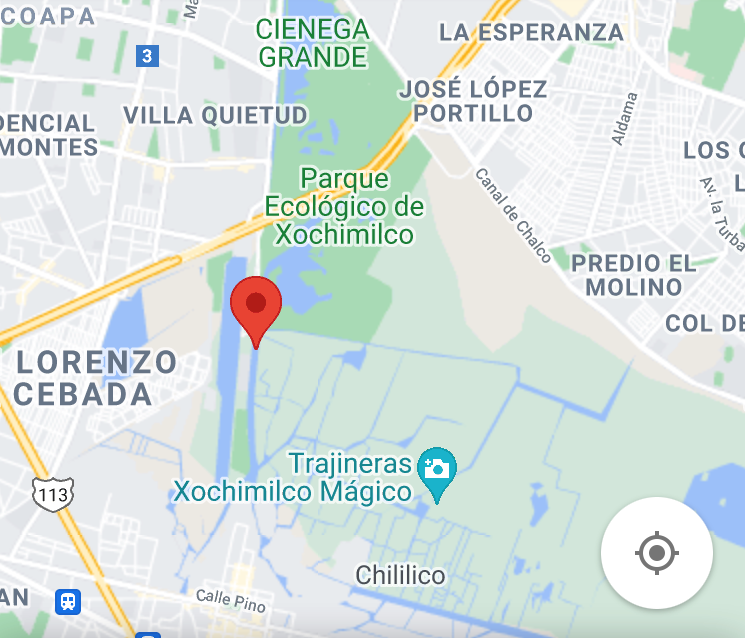

Parque Ecológico de Xochimilco
Localización
El Parque Ecológico Xochimilco se localiza al sureste de la Ciudad de México dentro del polígono del Área Natural Protegida con categoría de Zona Sujeto a Conservación Ecológica "Ejidos de Xochimilco y San Gregorio Atlapulco".
Importancia
Es de vital importancia ecológica ya que cuenta con la capacidad de albergar características que permiten el desarrollo de las chinampas , ademas de contar con dos ecosistemas: un sistema complejo de humedales con bosques calidos.Se considera un importante aportador de servicios ambientales a la Ciudad de México, además de contar con elementos atractivos para el turismo.
Existe una variedad de actividades que se pueden desarrollar a lo largo del parque. Desde lugares para pasar un día de campo familiar, hasta canchas multiusos y ciclopistas para hacer deporte. Se puede practicar el canotaje al igual que remos en el lago de 54 hectáreas. Aunque la atracción principal es el paseo recreativo e informático, se cuenta con un pequeño zoológico, invernaderos, un auditorio, una muestra arqueológica y mercados variados; por lo que se considera un area de gran importancia economica , social y cultural.
Informacion General
Cuenta con un ecosistema acuático, zonas húmedas, chinampas cálidas y un bosque templado. Dentro del parque se pueden encontrar distintos tipos de hortalizas al igual que plantas de ornatos como: rosas, alcatraces y margaritas, así como también ahuejotes, pinos y eucaliptos. Un mercado de plantas y flores vende lo producido por el parque.
El Parque Ecológico Xochimilco cuenta con espacios para que jóvenes y adultos puedan desarrollar actividades al aire libre en un ambiente de tranquilidad, rodeados de un paisaje majestuoso, además de tener un acercamiento con la naturaleza al convivir con diversas especies de aves.
Problematica
Las principales causas del deterioro de esta zona han sido causadas por la urbanizacion y la contaminacion de las zonas aledañas, basta con observar los canales y podremos encontrar vertederos , animales domesticos caminando por la zona asi como los desechos causados por un turismo no sustentable.
Ademas , la presencia de especies invasoras como la tilapia (Oreochromis niloticus) , carpa comun (Cyprinus carpio) y la tortuga de orejas rojas (Trachemys scripta elegans) han afectado la supervivencia de especies nativas del lugar como lo es el Ajolote.La tala excesiva y no sustentable de arboles como el ahuejote y el ahuehuete para la creacion de chinampas , han provocado daños en el suelo asi como en el equilibrio ecologico del lugar.

Equipo 3_club9
Bacab Ramos María José | Mendoza Rebeca | Velázquez Isaac | Yepez Palafox Isabel Cristina
Referencias
Gobierno de la Ciudad de México. Parque ecológico de Xochimilco. Consultado 13 de agosto de 2021 en: https://www.turismo.cdmx.gob.mx/storage/app/media/planos_2020/Mapa_PEX.pdf | Guía Práctica de Restauración ecológica. 2018, Mola, I.; Sopeña, A y de Torre, R. Consultado 13 de agosto de 2021 en: https://ieeb.fundacion-biodiversidad.es/content/guia-practica-de-restauración-ecologica | National geographic, 2018. Consultado el 14 de agosto de 2021 en: https://www.nationalgeographic.es/ | UNESCO. Xochimilco, Tláhuac, Milpa alta. Consultado el 13 de agosto de 2021 en: http://arquitectura.unam.mx/uploads/8/1/1/0/8110907/plan_maestro_unesco_xochimilco.pdf | Patrimonio Mundial de México UNESCO. Xochimilco. Consultado 14 de agosto de 2021 en: https://www.patrimoniomundial.com.mx/xochimilco/.